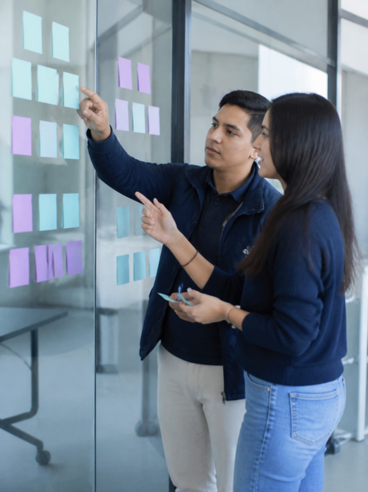
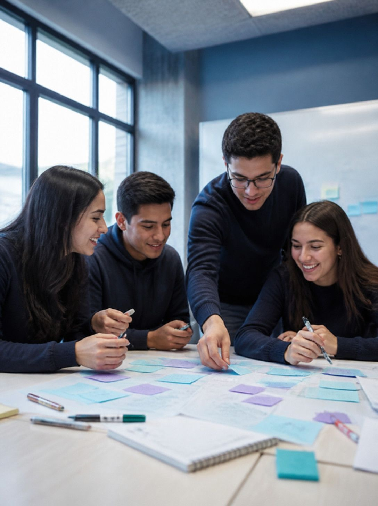
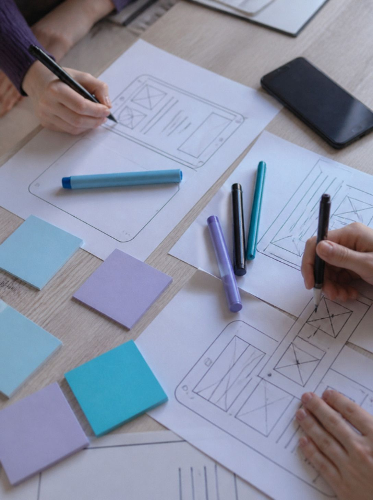

Interacción Digital · Pensamiento de diseño
Diseñar pensando en las personas
Design Thinking: investigar, comprender, idear y prototipar soluciones que respondan a necesidades reales
PREGUNTA INICIAL
¿Alguna vez una aplicación, una página o un trámite digital te hizo sentir que el problema eras tú?
Piensa en un caso concreto: qué intentabas hacer, dónde te trabaste y cómo te sentiste.
Interacción Digital · Pensamiento de diseño
90 MINUTOS
Ruta de la sesión
0–5 min
Pregunta inicial
5–12 min
Qué es y dónde empieza
12–21 min
Investigar y comprender
21–30 min
Idear y prototipar
30–40 min
Iterar y llegar a soluciones específicas
40–82 min · Por equipos
Sprint de diseño exprés
82–90 min
Cierre y trabajo independiente
Interacción Digital · Pensamiento de diseño
“
El diseño no es solo la chispa salvaje de creatividad que se enciende en un momento de inspiración. Es un viaje meticuloso y reflexivo, un proceso en el que se valora cada detalle y se prepara cada paso.
Charles Nix · Monotype
DESIGN THINKING
¿Qué es el pensamiento de diseño?
Una metodología que se enfoca en comprender las necesidades y deseos de las personas para dar solución a problemas específicos, mediante etapas iterativas en las que se trabaja de la mano con los usuarios potenciales.
Investigar
Comprender
Idear
Prototipar
Interacción Digital · Pensamiento de diseño
EL PUNTO DE PARTIDA
Todo empieza en una situación problema
EMPEZAR POR LA SOLUCIÓN
«Hagamos una app para los estudiantes»
Se decide qué construir antes de saber a quién le sirve, qué problema tiene y en qué momento lo vive.
EMPEZAR POR LAS PERSONAS
«¿Qué les pasa a los estudiantes y cuándo les pasa?»
Se investiga la situación y sus factores. La solución llega después, y puede que ni siquiera sea una app.
Pregunta del diseñador: ¿cómo podemos facilitar y mejorar la vida de las personas con esta solución?
Interacción Digital · Pensamiento de diseño
EL PROCESO
Cuatro etapas, una pregunta en cada una
01
Investigar
¿Qué está pasando y a quién le pasa?
02
Comprender
¿Qué necesitan y desean de verdad?
03
Idear
¿De cuántas formas podríamos resolverlo?
04
Prototipar
¿Funciona y responde a lo que esperan?
Es iterativo: cuando una etapa revela algo nuevo, se vuelve a la anterior. No es una línea recta.
Interacción Digital · Pensamiento de diseño
ETAPA 1 DE 4
Investigar
Hacer una inmersión en el contexto para identificar los factores asociados a la situación problema y evaluar cómo una solución podría facilitar y mejorar la vida de las personas.
Fuentes primarias
Lo que obtienes tú: entrevistas, observación, encuestas, acompañar al usuario.
Fuentes secundarias
Lo que ya existe: estudios, informes, artículos, datos públicos, reseñas.
Buena pregunta de entrevista: «Cuéntame la última vez que…». Pide historias, no opiniones.
Interacción Digital · Pensamiento de diseño

ETAPA 2 DE 4
Comprender
Condensar y definir lo investigado para sentar las bases del trabajo en dos aspectos de las personas: sus necesidades y sus deseos. Así aparecen los puntos de dolor que hay que resolver.
Necesidad
Lo que debe lograr: inscribir sus materias a tiempo.
Deseo
Cómo quiere sentirse: seguro de que no se equivocó.
Punto de dolor
Dónde se traba: no sabe si la inscripción quedó guardada.
Mapa de empatía
Qué dice, piensa, hace y siente el usuario.
Interacción Digital · Pensamiento de diseño
DE COMPRENDER A IDEAR
Convertir el problema en un reto: ¿Cómo podríamos…?
MUY CERRADO
Hacer una app de horarios.
MUY ABIERTO
¿Cómo podríamos mejorar la vida universitaria?
BIEN PLANTEADO
¿Cómo podríamos ayudar a los estudiantes de primer semestre a llegar a su salón el primer día sin perder el inicio de la clase?
Fórmula:
¿Cómo podríamos
+ acción
+ para quién
+ para lograr qué?
Interacción Digital · Pensamiento de diseño

ETAPA 3 DE 4
Idear
Generar el mayor número de posibilidades de solución a partir de lo que definimos al comprender. Es un momento de divergencia: primero abrimos, después elegimos.
Cantidad antes que calidad: las ideas raras abren caminos.
No se juzga mientras se idea: se evalúa después.
Cocreación: invitar la voz del usuario a idear con nosotros.
Interacción Digital · Pensamiento de diseño
IDEAR · HERRAMIENTAS
Técnicas para generar ideas
Lluvia de ideas
Muchas ideas en poco tiempo, sin criticar. Luego se agrupan y se votan.
SCAMPER
Transformar algo que existe: sustituir, combinar, adaptar, modificar, darle otro uso, eliminar, reordenar.
Seis sombreros para pensar
Mirar una idea desde seis perspectivas: datos, emociones, riesgos, beneficios, creatividad y control del proceso.
TRIZ
Resolver contradicciones («que sea más seguro, pero más rápido») con principios inventivos ya probados.
Interacción Digital · Pensamiento de diseño

ETAPA 4 DE 4
Prototipar
Elaborar una versión de la idea que mejor cumple las expectativas de los usuarios para probarla y hacer ajustes antes de la entrega final.
Testeo funcional
¿Resuelve la necesidad? ¿Se puede usar sin ayuda?
Testeo emocional
¿Responde a lo que esperaba? ¿Cómo se siente al usarla?
De menor a mayor detalle: boceto en papel → pantallas digitales sin diseño final → maqueta navegable.
Interacción Digital · Pensamiento de diseño
PROCESO ITERATIVO
El doble diamante: abrir y cerrar dos veces
Diseñar lo correcto: ¿cuál es el problema?
Diseñar bien: ¿cuál es la solución?
Descubrir
Abrir · Investigar
Definir
Cerrar · Comprender
Desarrollar
Abrir · Idear
Entregar
Cerrar · Prototipar y probar
Interacción Digital · Pensamiento de diseño · Doble diamante: Design Council (Reino Unido)
EL RESULTADO
Soluciones específicas
El pensamiento de diseño parte de la comprensión profunda de las personas e involucra variables del contexto, de los usuarios, de sus necesidades y de sus deseos, para dar una solución específica que responda y brinde alta satisfacción.
PRINCIPIO FUNDAMENTAL
«Ponerse en los zapatos del otro»
Interacción Digital · Pensamiento de diseño
CONEXIÓN CON INTERACCIÓN DIGITAL
Donde lo encontramos en lo digital
Experiencia de usuario
Cómo se siente usar una app o una plataforma de principio a fin.
Interfaces
Pantallas, botones y mensajes que se entienden sin manual.
Servicios y contenidos
Trámites en línea, cursos virtuales y publicaciones pensadas para su audiencia.
Para tu carrera: cualquier profesión resuelve problemas de personas. El método sirve igual para un servicio, un proceso o un producto.
Interacción Digital · Pensamiento de diseño
Actividad por equipos · 40 a 82 min
Sprint de diseño exprés
En equipos de 4 o 5, recorren las cuatro etapas con un reto real de la vida universitaria y terminan con un prototipo en papel que otro equipo pone a prueba.
Investigar · 7'
Comprender · 5'
Idear · 7'
Prototipar · 8'
Probar y socializar · 13'
SPRINT · 40–42 MIN
Elijan una situación problema
1
Inscribir materias por primera vez en el portal académico
2
Encontrar un salón, laboratorio u oficina el primer día
3
Entregar un trabajo en la plataforma virtual minutos antes del cierre
4
Reservar un espacio de estudio o un equipo en la biblioteca
5
Coordinar un trabajo en grupo por chat sin perder información
6
Hacer un trámite o pedir una cita administrativa en línea
7
Enterarse a tiempo de eventos y convocatorias de la universidad
8
Comprar el almuerzo en el campus a la hora de más fila
Regla: cada equipo tiene una situación distinta. Todavía no piensen en la solución: solo elijan el problema.
Interacción Digital · Pensamiento de diseño
SPRINT · CÓMO SE TRABAJA
Cinco fases, un producto en cada una
| Fase y tiempo | Qué hacen | Producto |
|---|---|---|
| Investigar · 7' | Entrevisten a dos personas de otro equipo que hayan vivido la situación. Pidan historias: «Cuéntame la última vez que…». | 3 hallazgos |
| Comprender · 5' | Ordenen lo que oyeron en un mapa de empatía (dice, piensa, hace, siente) y escriban el reto. | 1 pregunta «¿Cómo podríamos…?» |
| Idear · 7' | Tres minutos en silencio: cada uno escribe al menos tres ideas. Luego cada persona vota dos. | 1 idea elegida |
| Prototipar · 8' | Dibujen la solución en 3 o 4 pantallas o pasos en papel, con los textos y botones principales. | Prototipo en papel |
| Probar · 13' | Dos minutos por equipo: muestran el reto y alguien de otro equipo usa el prototipo en voz alta. | 1 ajuste que harían |
Interacción Digital · Pensamiento de diseño
CIERRE · 82–87 MIN
Tres ideas para llevar
1
Se diseña para personas concretas: primero se investiga y se comprende, después se propone.
2
Un buen reto no trae la solución escrita: «¿Cómo podríamos…?» abre opciones.
3
Prototipar y probar pronto es más barato que equivocarse tarde: iterar es aprender.
Interacción Digital · Pensamiento de diseño
TRABAJO INDEPENDIENTE · INDIVIDUAL
Rediseña un momento de una app que usas
1
Investiga: pregunta a dos personas cómo usan esa app y dónde se traban.
2
Comprende: identifica un punto de dolor y escribe tu «¿Cómo podríamos…?».
3
Idea: propón al menos cinco soluciones y elige una explicando por qué.
4
Prototipa: dibuja 3 o 4 pantallas en papel, Canva o Figma, y pruébalas con una persona.
Entrega: un documento de dos páginas con las cuatro etapas, la foto del prototipo y una línea sobre qué cambiarías después de la prueba.
Interacción Digital · Pensamiento de diseño
Para llevar
SPRINT · 69–82 MIN
Lo que cada equipo socializa en 2 minutos
1
A quién escucharon y el hallazgo que más los sorprendió
2
Su reto en forma de pregunta «¿Cómo podríamos…?»
3
La idea elegida y por qué responde a una necesidad y a un deseo
4
Qué pasó cuando otra persona usó el prototipo y qué cambiarían
Se valora la participación: que el equipo socialice, que sus integrantes intervengan y que el prototipo se ponga a prueba, aunque falle.
Si el prototipo confunde, es una buena noticia: lo descubrieron en papel y no después de construir la app.
Interacción Digital · Pensamiento de diseño